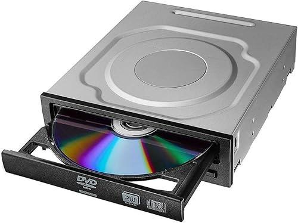
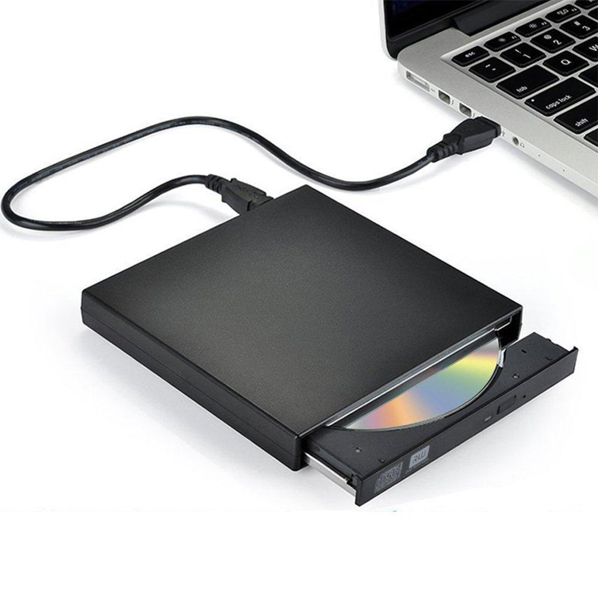
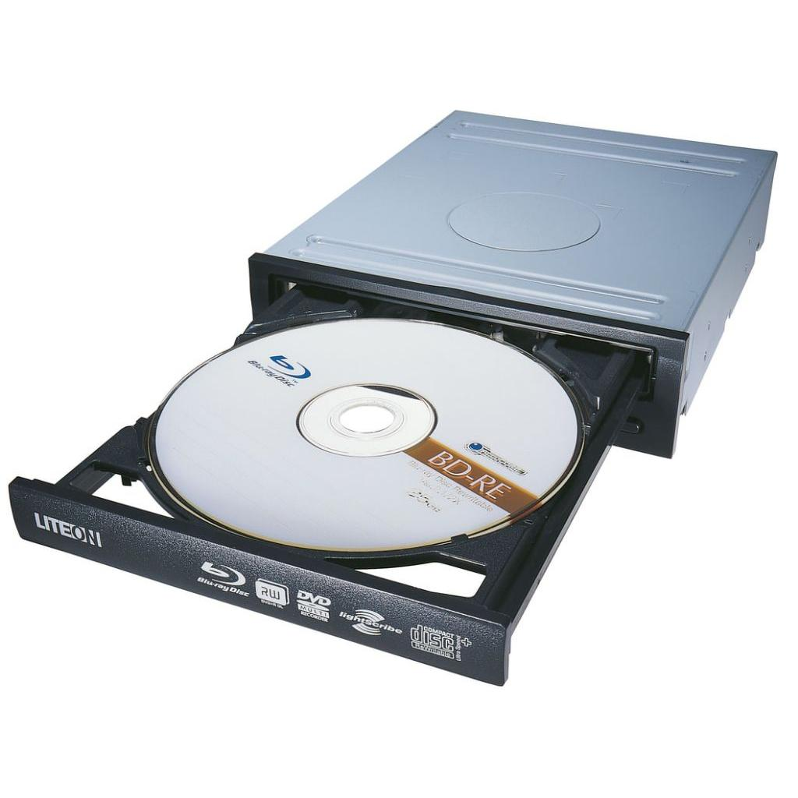
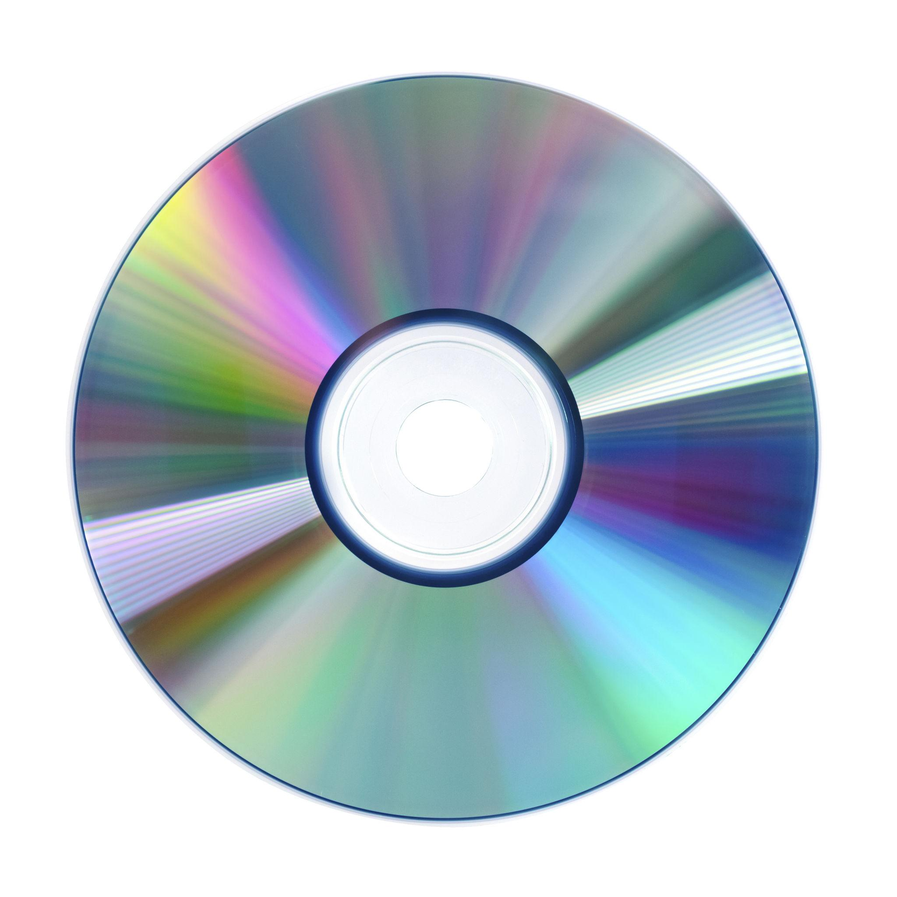
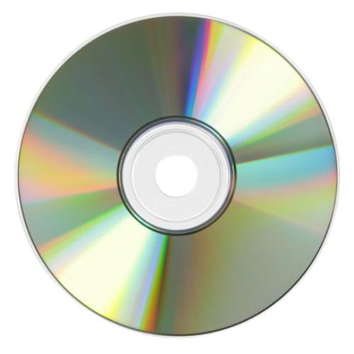
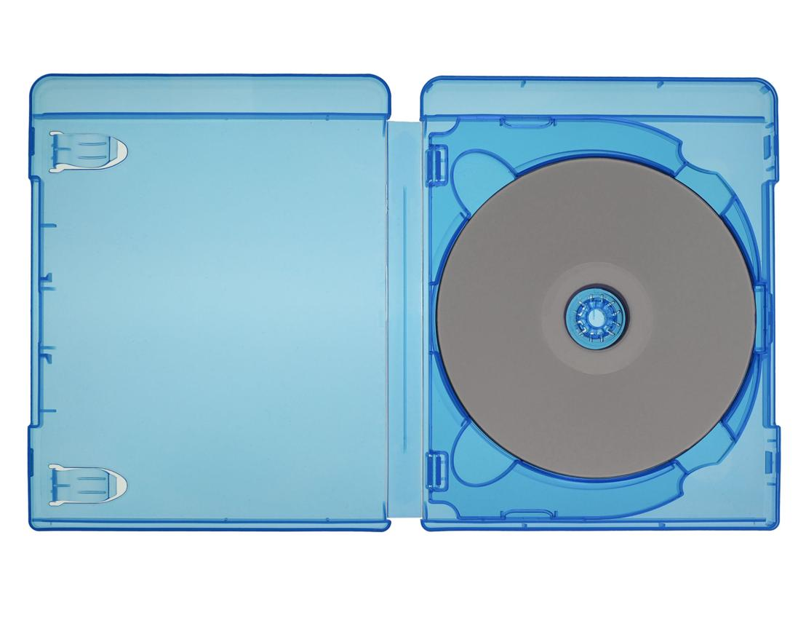

CURATED COLLECTION
光碟機
CD ROM、DVD ROM、Blue RAY ROM
一、什麼是光碟機？
光碟機（Optical Disc Drive）是一種電腦硬體設備，主要用來讀取或寫入光碟片中的資料。
光碟機透過雷射光讀取光碟上的資訊，可以用來播放音樂、觀看影片、安裝軟體及儲存資料。
隨著 USB 隨身碟、外接硬碟及雲端儲存的普及，現代電腦已較少內建光碟機，但仍可使用外接式光碟機。
二、光碟機的主要功能
- 讀取資料： 讀取光碟中儲存的檔案、圖片及其他檔案。
- 播放影音： 播放音樂 CD、DVD 影片等影音內容。
- 安裝軟體： 讀取光碟中的作業系統、遊戲或應用程式。
- 燒錄資料： 使用具備燒錄功能的光碟機，將資料寫入可燒錄光碟。
- 備份資料： 將重要檔案儲存於光碟中，方便保存與攜帶。
三、光碟機的種類

1. 內接式光碟機
安裝在桌上型電腦機殼內部，通常透過 SATA 介面連接主機板。

2. 外接式光碟機
通常透過 USB 連接電腦，方便攜帶，適合沒有內建光碟機的筆記型電腦。

3. 藍光光碟機（Blu-ray Drive）
可讀取藍光光碟，適合播放高畫質影片或存取較大容量的資料，部分機型也支援燒錄。
四、什麼是光碟片？
光碟片（Optical Disc）是一種利用雷射技術讀取或寫入資料的圓形儲存媒體。
光碟片可以儲存音樂、影片、照片、檔案及電腦軟體，常見種類有 CD、DVD 和 Blu-ray Disc（BD）。
五、光碟片的種類與容量

1. CD（Compact Disc）
容量：約 650～700 MB。
主要用來儲存音樂、檔案及少量資料。

2. DVD（Digital Versatile Disc）
容量：單層約 4.7 GB，雙層約 8.5 GB。
主要用來儲存電影、軟體及較大的資料檔案。

3. Blu-ray Disc（藍光光碟）
容量：單層約 25 GB，雙層約 50 GB。
主要用來儲存高畫質影片及大量資料。
六、光碟片的比較
光碟種類 |
常見容量 |
主要用途 |
|---|---|---|
CD |
700 MB |
音樂、檔案 |
DVD |
4.7 GB |
電影、軟體 |
Blu-ray |
25 GB |
高畫質影片、大量資料 |
七、光碟片的優缺點
優點 |
缺點 |
|---|---|
可用來保存與備份資料 |
容量通常比現代硬碟小 |
適合播放實體影音光碟 |
讀寫速度通常較慢 |
可離線存取資料 |
光碟表面容易刮傷 |
部分光碟可長期保存 |
許多新電腦不再內建光碟機 |
八、總結
光碟機是讀取或燒錄資料的設備，而光碟片是儲存資料的媒體。
兩者必須搭配使用，才能進行光碟資料的讀取或寫入。雖然現在逐漸被 USB 隨身碟、SSD 及雲端儲存取代，但在影音播放、資料備份及舊軟體安裝等方面，仍具有一定的用途。
簡單來說：光碟機負責「讀取資料」，光碟片負責「儲存資料」。